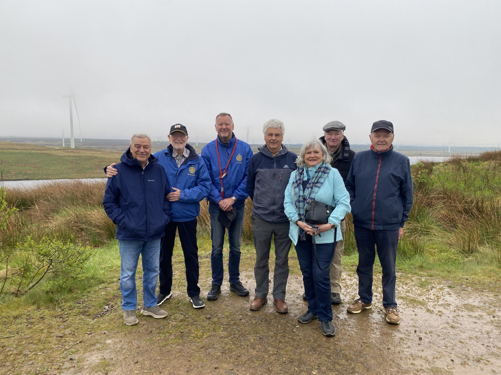

Visit to Whitelee Windfarm

Our Guide, Stuart began our journey explaining that Whitelee is the UK’s largest onshore windfarm, located on Eaglesham Moor just 20 minutes from central Glasgow. Its 215 turbines generate up to 539 megawatts of electricity, enough to power over 350,000 homes
With more than 130 kilometres of trails to explore, on foot, by cycle or by horse, with free parking and free entry to our onsite Visitor Centre, Whitelee is a great destination for a day out with the whole family. The windfarm originally consisted of 140 turbines and was commissioned in 2008, later opened to the public in 2009. Since then, it has undergone two phases of extensions with the Phase 1 extension adding 36 turbines to the development, followed by Phase 2 adding a further 39 turbines creating the current total of 215 turbines and a generation capacity of 539MW.
The original 140 turbines being commissioned in 2008, Whitelee Windfarm celebrated its 15th year in operation in 2023.
Prior to the windfarm being constructed, the land in which our turbines now call home, was a mixture of woods, farmland and farm roads, and tracks used by the forestry commission. Now the land is a haven for wildlife, a renewable energy generation hub, and an educational visitor centre thanks to our work with Glasgow Science Centre.
We thanked our Guide Stuart for a most informative and fact filled tour.